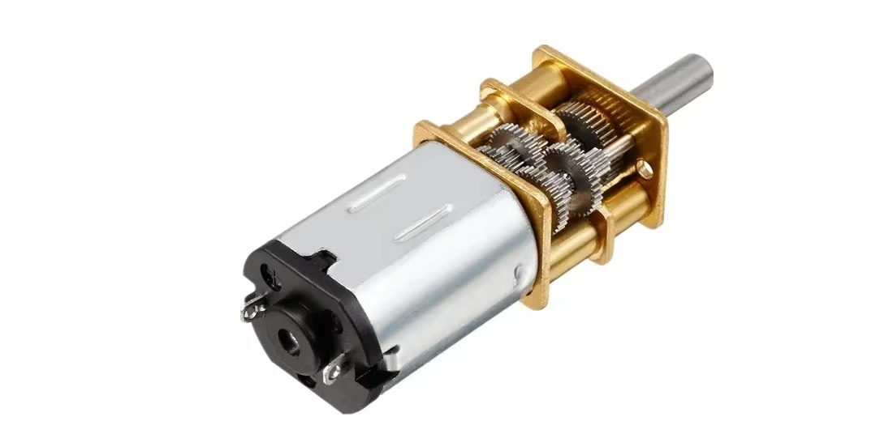
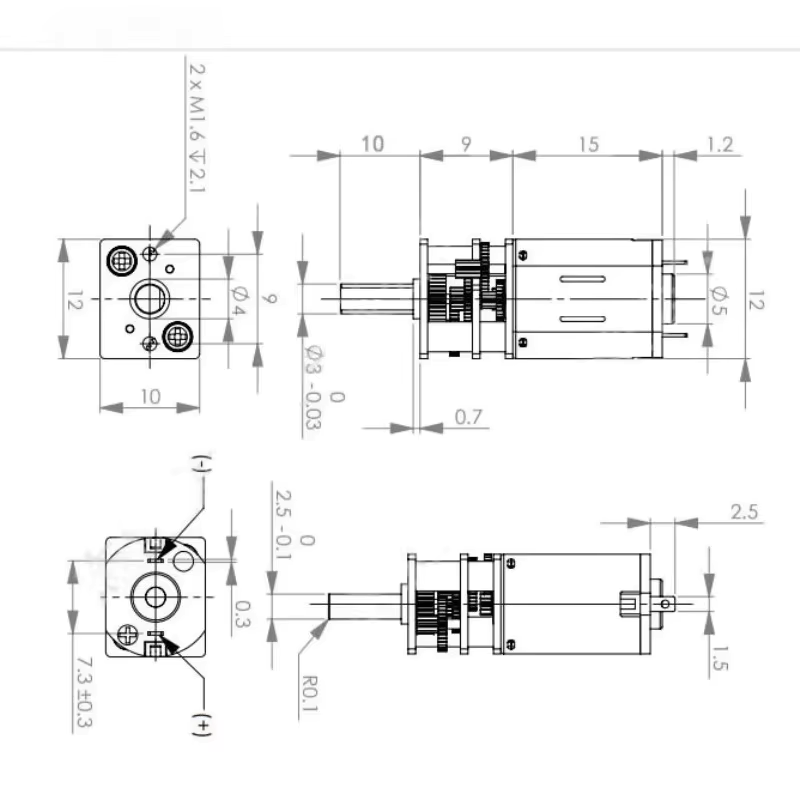
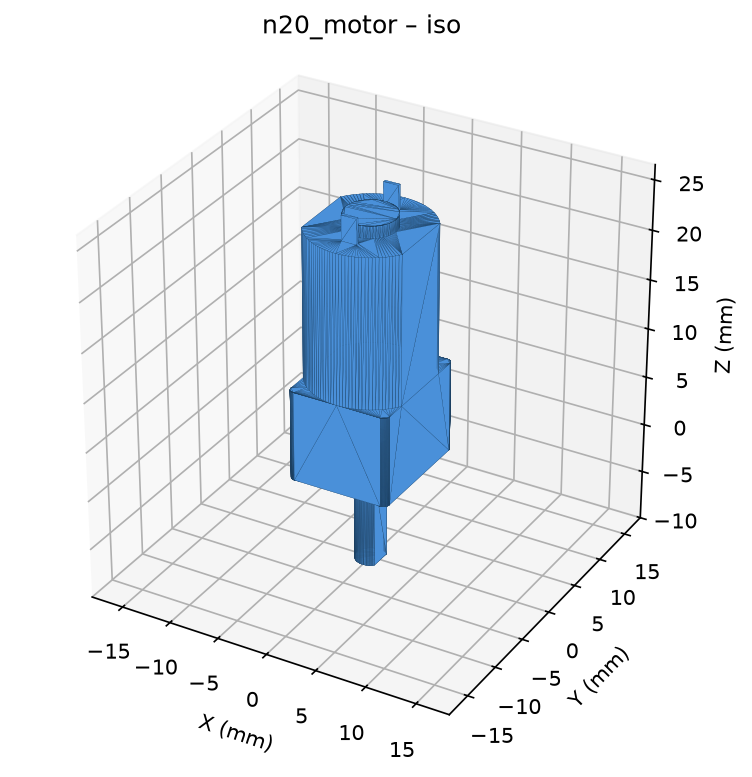
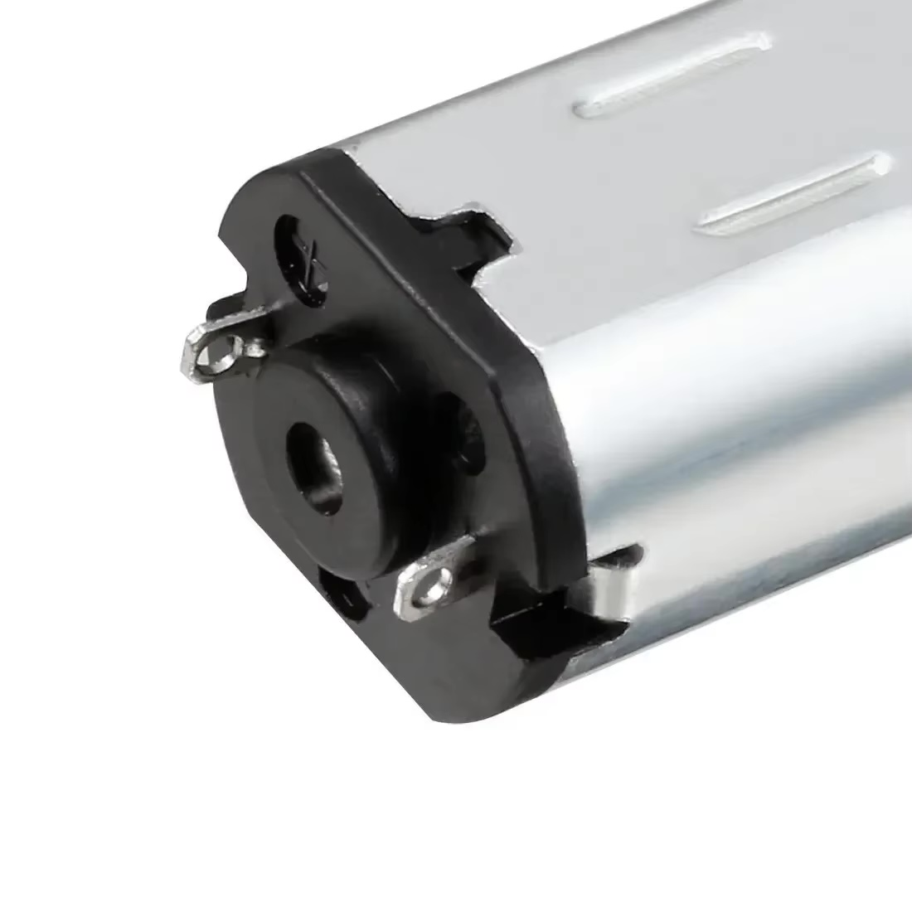
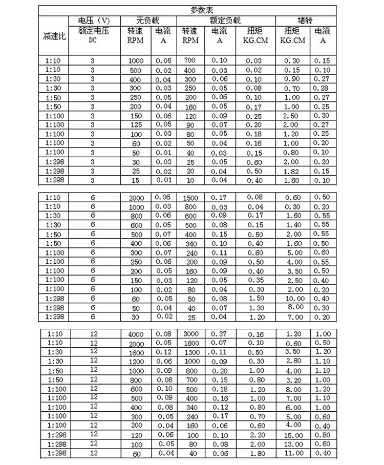

M2
N20 micro metal gearmotor, 6 V, 1:100 (100 rpm no-load)
untested×5New-bought stock, model N20 — the common small metal-gearbox motor used in
toy robots, vending/lock mechanisms, and smart-home actuators. Sold in a family of
voltages (3/6/12 V) and gear ratios (1:10 to 1:298); this batch is specifically the
6 V, 1:100 variant.
- Total length ~35 mm including the shaft (10 shaft + 9 gearbox + 15 can + 1.2 rear boss, per the dimension diagram). Gearbox front face is a 12 × 10 mm bracket with two M1.6 tapped holes (2.1 mm deep) 9 mm apart on the tall centerline (per the dimension diagram), output shaft on a Ø4 mm boss.
- Output shaft: Ø3 mm (0/−0.03 mm) × 10 mm, D-flat for a set-screw or
friction-fit hub. Measured 2026-09-02: Ø3.0, flat
2.45 mm across — inside the drawing's 2.5 mm 0/−0.1 band. (A
first reading said 2.6; a caliper across a D can only over-read, so take
the smallest value you can get.) A printed D-bore grips this shaft
properly at 0.10 mm radial clearance — measured on
the X2D in PLA Basic with
cad/robot_car/bore_coupons.py, which swept 0.00–0.20; 0.15 and up drop on loose. - Motor can (behind the gearbox): Ø12 mm × 15 mm, flattened to 10 mm across (matching the bracket width).
- Rear terminals: two solder tabs, (−)/(+) marked on the can, ~7.3±0.3 mm apart — swap them to reverse direction.
- Seller's parameter table (参数表), 6 V / 1:100 row — the one that applies to this batch: no-load 100 rpm at 0.02 A; rated load 80 rpm at 0.04 A (0.30 kg·cm); stall 2.00 kg·cm at 0.20 A. The table also covers 3 V and 12 V, and ratios from 1:10 to 1:298 — keep it as a reference for any other N20 variant we order later, but this entry only speaks for the 6 V/1:100 units actually on hand.
{kind=link}
To verify:
- No-load current and speed at 6 V against the spec above
- Stall current (brief — don't hold stalled)
- Shaft rotation direction vs. (+)/(−) polarity marking
- Backlash / gear noise by hand
- M1.6 screws on hand actually fit the bracket holes
{kind=link}

{kind=link}

{kind=link}

cad/parts/n20_motor.py), built from the
dimension diagram below.{kind=link}

